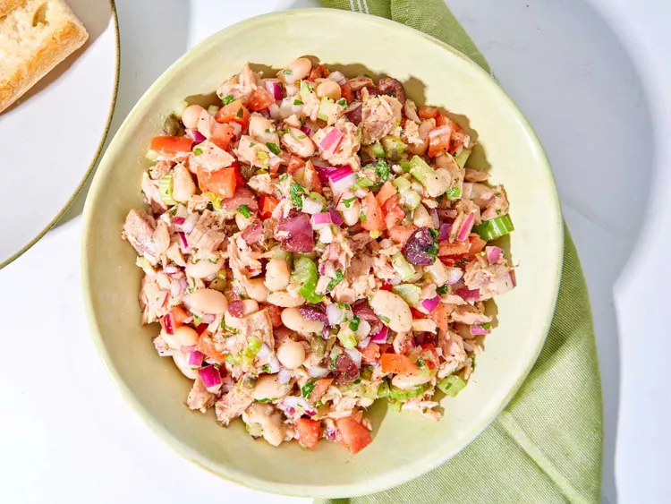

A celebration of fresh, simple ingredients and bold flavors, Italian cuisine is renowned for its pasta, pizza, risottos, and vibrant Mediterranean staples like olive oil, tomatoes, and fresh herbs. Its dishes often strike a perfect balance between comfort and elegance.
A refreshing and zesty combination of tuna, fresh vegetables, and herbs, offering a light yet deeply satisfying meal.
Succulent chicken cooked in a rich tomato-based sauce with fragrant herbs, delivering a comforting and effortlessly flavorful dish.